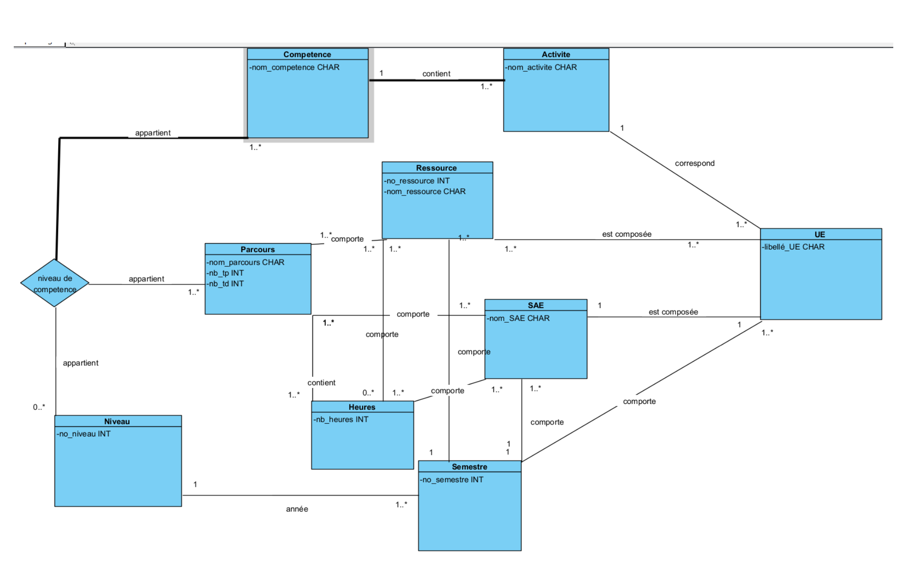
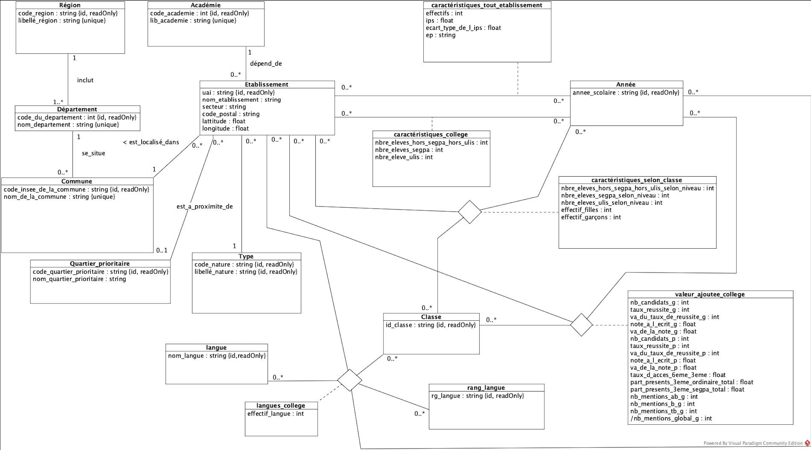
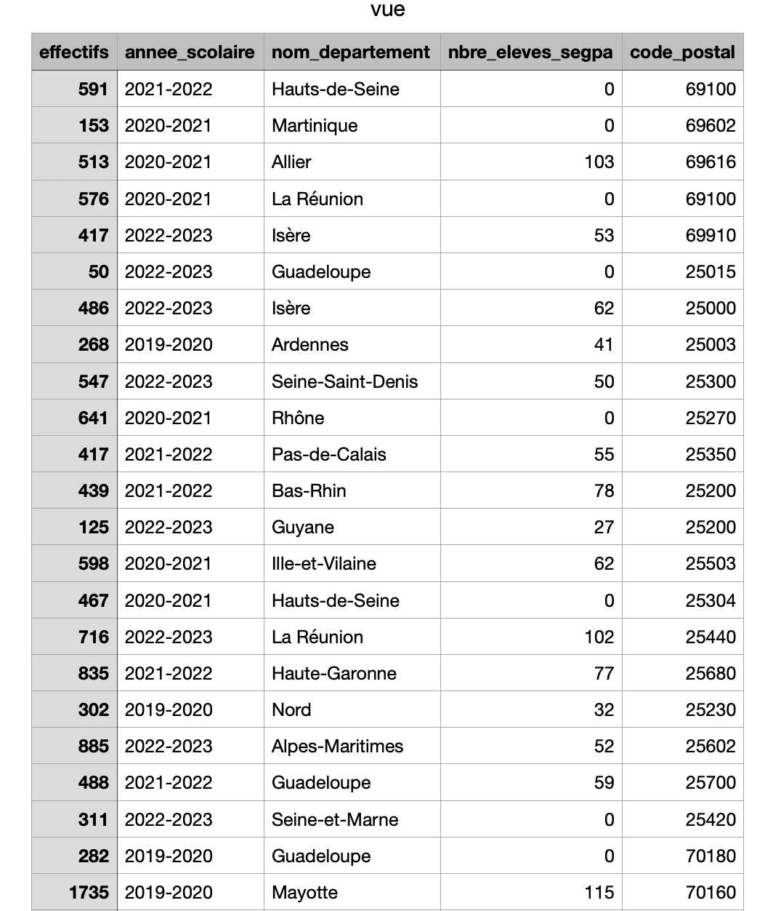

Base De Données / SQL
Projet N°1 SQL
Mon premier projet en SQL était l'étude des besoins d'un client afin de réalise un diagramme de classe UML. Ce diagramme de classe UML allait ensuite nous servir à réaliser un script SQL à éxecuter sur SQLWorkBench. Ce travail était à réaliser en équipe de 2.
Etape 1
La première étape du projet était donc de comprendre le besoin du client et donc ce qu'on avait à interpréter en diagramme UML. Il fallait donc décortiquer un document qui nous avait été distribuer pour obtenir le plus d'information possible.
Etape 2
La deuxième étape était la réalisation du diagramme UML à partir des données récupérer à l'étape d'avant. Nous avons donc pu déterminer un diagramme UML comme ceci:
Etape 3
L'étape 3 était le début de la réalisation du projet. Nous devions donc commencer la réalisation du script SQL à l'aide d'un diagramme UML corriger données par nos enseignant mais similaire à celui qu'on a fait. Ce n'était pas l'étape la plus compliqué car transmettre une diagramme de classe en SQL n'est pas bien dur. Ce qui nous a permis de terminer assez facilement la SAE
Lien du GitHub pour ce projet :
Projet N°1 SQLProjet N°2 SQL
Ce projet se déroule quelque mois après le premier. Entre temps j'ai pris en compétence et en maitrise en SQL. J'ai acquis les bases comme il se doit ce qui nous permet de nous lancer dans un deuxième projet en SQL toujours en groupe de 2. Ce projet reprend un peu le principe de l'autre projet car nous avons à réaliser à partir d'un diagramme UML un script SQL pour créer une base de données. Ensuite notre objectif sera de peupler cette base de données pour pouvoir la gérer ensuite et faire un ainsi des statistiques.
Diagramme UML:
Etape 1
L'étape 1 de ce projet est la plus simple. Il suffisait juste de transcrire un Diagramme UML en SQL. Il a fallut 2h pour finir cette partie là le temps de bien comprendre comment était fait le diagramme UML. Le script fait il fallait donc l'éxécuter sur une basa afin de pouvoir la peupler ensuite.
Etape 2
La deuxième étape du projet était le peuplement. Les enseignants nous on fournit le début du peuplement à faire à partir de CSV. Il ne nous restait juste que à compléter et faire le peuplement de quelque classe pour faire cette partie du projet. Cette étape était plus dur que la dernière malgré le fait qu'une partie du peuplement soit fait car on n'était pas vraiment habituer avec les WB import et le peuplement. On a donc mit un peu plus de temps à réaliser cette partie en conséquent.
Etape 3
La troisième étape du projet était donc l'utilisation des données insérer dans la base de données. Nous avions comme objectif dans cette partie de faire un jeu de données avec 5 variables du diagramme UML. A l'aide d'une vue on devait export ses variables dans un csv pour pouvoir ensuite les utlisés en python pour faire des statistiques à l'aide de ses variables.
Les données utilisées :
Ils à environ 11600 données.
